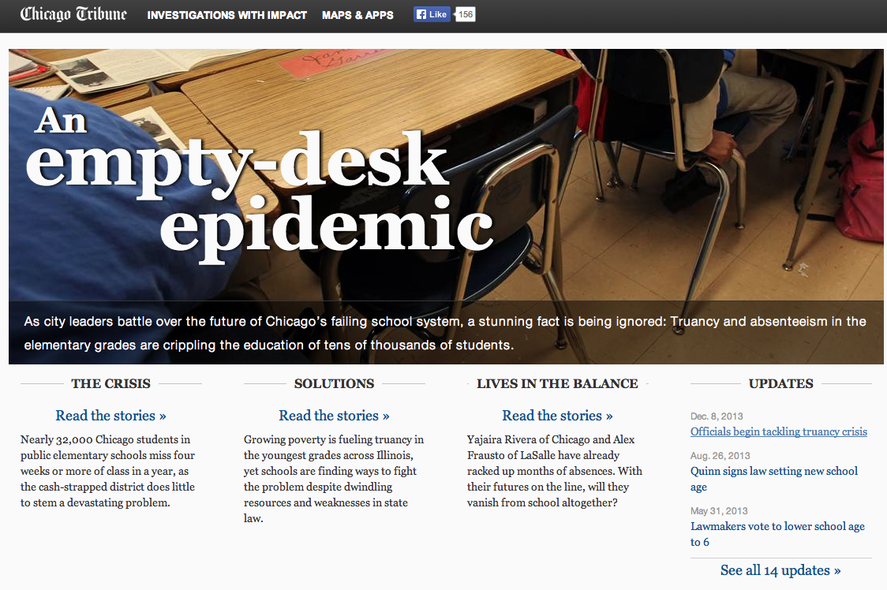
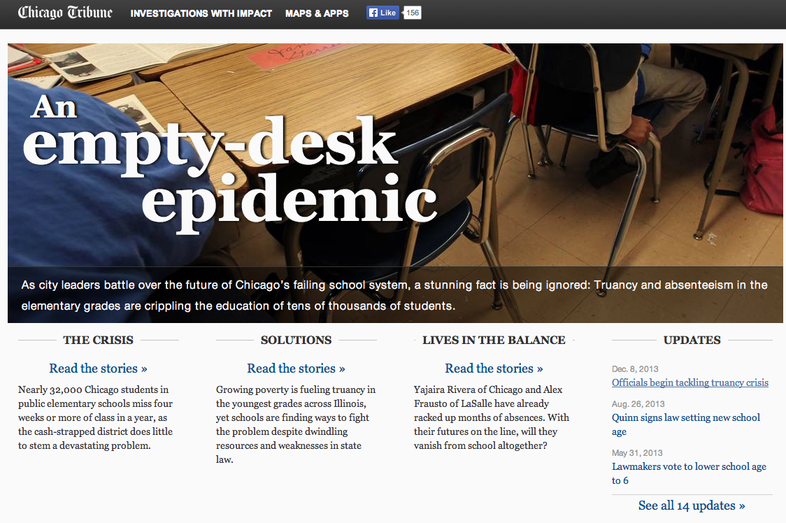
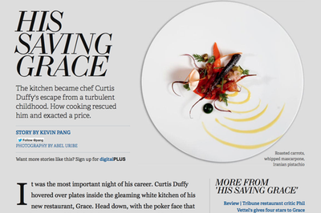
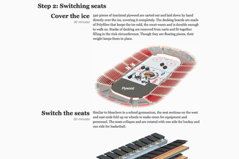
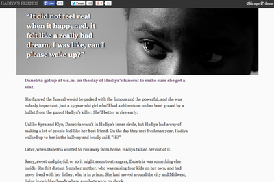

A familiar situation
What's This All About
- Self-contained: free of CMS constraints
- Templates ensure consistency, save time
- Static HTML: no servers to run
- Editors empowered to manage copy
Do That Again
 

Tarbell is born


Successes
Challenges
- Very command-line heavy
- Initial setup is abstract
- Needs some kind of server space (S3, etc)
- Outside of CMS sometimes an issue